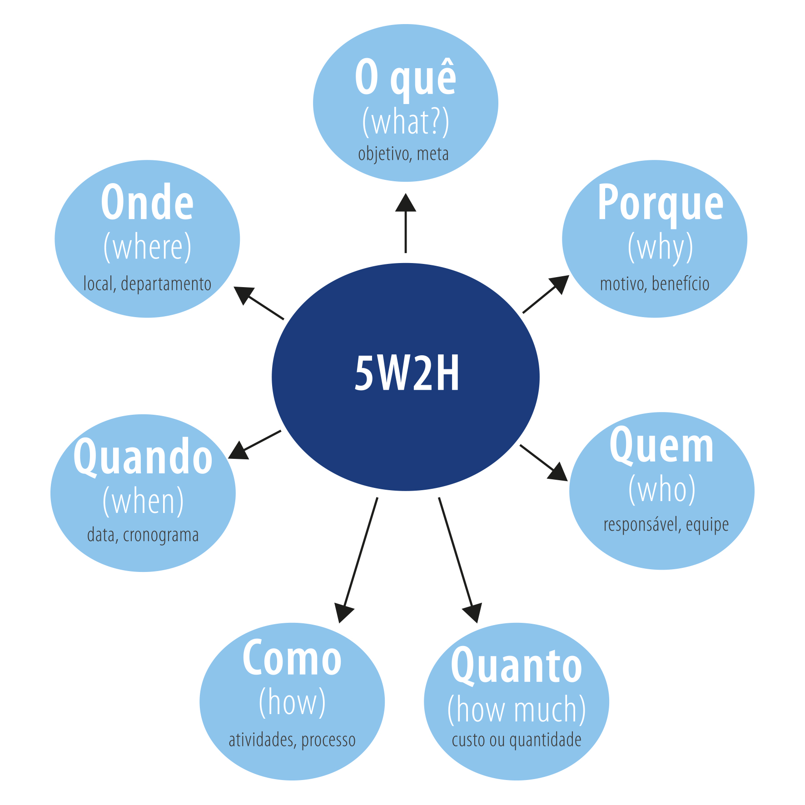

Versionamento de edições
| Data | autor | Descrição | Versão |
|---|---|---|---|
| 30/03/2019 | Luís Cláudio | criação do texto base e inserção da tabela do 5w2h | 0.1 |
| 03/04/2019 | William Elias Alves | Inserçaõ do texto no mkdocs | 0.2 |
| 08/04/2019 | William Elias Alves | Inserção da tablela de versionamento | 0.3 |
Definição
A planilha 5W2H é uma ferramenta administrativa que pode ser utilizada em qualquer empresa a fim de registrar de maneira organizada e planejada como serão efetuadas as ações, assim como por quem, quando, onde, por que, como e quanto irá custar para a empresa. Essa ferramenta ajuda na execução e sobretudo no controle das tarefas dos processos, o que pode significar uma economia de tempo e recursos – afinal, quando bem implementado, as dúvidas dão lugar à produtividade e eficiência. 
(FONTE DA IMAGEM - https://wiki.redejuntos.org.br/busca/ferramenta-5w2h-para-tecnologia-na-gestao-publica)
Planilhas 5W2H desenvolvidas
| Passos | Detalhes |
|---|---|
| WHAT | Um software que permite a interação entre pessoas por meio de publicações e análises de textos. |
| WHY | Para que pessoas possam escrever seus textos, opinar sobre os textos de outros e, assim, trocar ideias e ensinamentos, seja por publicações amadoras ou profissionais. |
| WHERE | Foi desenvovida na sede da empresa Medium Corporation em São Francisco, California. |
| WHO | A plataforma Medium foi desenvolvida pelo co-fundador do Twitter, Evan Williams. |
| WHEN | Plataforma lançada em 15 de agosto de 2012. |
| HOW | O Medium foi desenvolvido na liguagem Node.js e o editor de texto com o qual os usuários do Medium escrevem posts, foi baseado no TinyMCE. |
| HOW MUCH | -- |
Referências
- [Open Access] 5W2H - Planejamento Estratégico, disponível em: https://sites.google.com/site/planejaweb/5w2h (último acesso em: 2019)
- [Open Access] 5W2H: o que é e como aplicar, disponível em: https://endeavor.org.br/pessoas/5w2h/ (último acesso em: 2019)
- [Open Access] Medium (website), disponível em: https://en.wikipedia.org/wiki/Medium_(website) (último acesso em: 2019)
- [Open Access] Visão geral da empresa A Medium Corporation, disponível em : https://www.bloomberg.com/research/stocks/private/snapshot.asp?privcapId=254803290 (último acesso em: 2019)